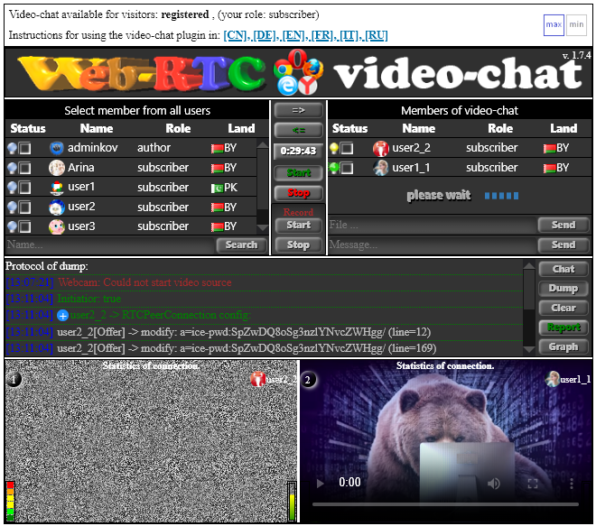
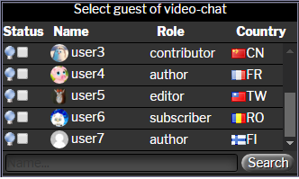
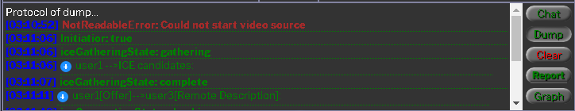

Instructions for using the WP-WebRTC2 video-chat plugin
Plugin GUI
The general view of the video-chat plugin is presented below in the form of 7 graphic areas:

1. Plugin banner:

In the middle of the banner is a pentagram of browser icons with which this plugin works: Google Chrome, Fire Fox, Edge, Opera, Yandex.
2. Window of registered site visitors:

This is a list of all registered site visitors.
In the "Status" field - the color of the light bulb means:


3. Plugin Management Window:

invite the person to video-chat
exclude the person from the video-chat
countdown timer
start a video-chat
end video-chat
start video-chat recording
end video-chat recording
note: after clicking the Start button for recording a video chat, the invited interlocutor will receive a message that the video call is being recorded by his interlocutor. During the recording of a video chat, the following occurs:1. Recording an audio stream and a video stream of two video chat partners.
2. Recording text messages of two video chat partners.
3. Recording the drawing process on the drawing board of two video chat interlocutors.
4. After clicking the Stop button (end recording the video chat), the user will be prompted to save the result of recording the video chat in .webm format to the local disk.
4. A window with a list of two participants in a video-chat:

In the first row of the table - the owner of the negotiation room, inviting the interlocutor. If you click on his name, you will be taken to his Profile. The button "Choose a file" is used to select a file and transfer it to the interlocutor. Select the file and click the Send button. A progress-bar will appear while the file is being transferred to the interlocutor. Field "message" - enter a message there and click the Send button.
5. Combined window for displaying current messages:

button "Chat" - display mode of messages of an autoresponder, participants of video-chat.

button "Dump" - display mode of the process of establishing a video-chat.button "Clear" - clear selected message box.
button "Report" - saves text messages of the autoresponder and participants of video-chat or the protocol of establishing communication - to an external file in HTML format.

6,7 Two windows of two participants in a video-chat:

The first window of the video stream is the owner of the meeting room. Clicking on his name will take you to his Profile. In the upper left corner of each window of the video stream is the window number. By clicking on it, you can increase the size of the window with the display of the "picture in picture" mode. Pressing it again will bring the window to its initial position.
When you move the mouse cursor to the window number, a menu appears - switches to the computer screen display mode or vice versa - turns on the web camera.
The interface is designed in such a way that the buttons are labeled with white colors will not be available. The embedded logic of the plugin's behavior changes the color of the button labels to green or red and will be available if appropriate. This allows you to avoid failure with incorrect use plugin. (important to note: the site administrator does not participate in the video chat for security reasons, in order to prevent his login from being shown to all other site visitors).
 The participant of the video chat can enlarge his or the interlocutor's window by clicking on the circle (1) or (2) with the display of the 'picture in picture' mode. Pressing again - brings the window back to its original position.
The participant of the video chat can enlarge his or the interlocutor's window by clicking on the circle (1) or (2) with the display of the 'picture in picture' mode. Pressing again - brings the window back to its original position.
When you move the mouse cursor over the circle (1), a drop-down menu of two items appears: screen(or- webcam) and board( or- no board)
- screen/webcam - switches the screen of the interlocutor to the mode of sharing your screen or switching to a webcam.
- board/no doard - turns the interactive drawing board mode on or off.
8 Profile of the registered user:

Added the item - Users for Video chat to the user profile. In the case of a large number of registered users of the site, at this point, for convenience, the user can create his own Contact List for video chat.

Added item Email to the user profile:
1. Send video-chat autoresponder messages to my email
2. Send video-chat session text messages to my email
How to establish a video call
1. Go to the website page under your login, where the shortcode [webrtc2] is set.
2. In the window of registered visitors of the site, select the checkbox of the user with whom you want to establish a video connection and click the => button (invite the interlocutor to the video chat).
2.1 If the light of the selected user is blue, it means that there is currently no user. In this case, you can only leave him a message on the autoresponder by entering a message in the message field and pressing the Send button.
2.2 If the selected user's light is yellow, it means that the user is present and will receive a call tone. To find out who is calling - this user can move the mouse cursor over the green light in the logged in visitors window.
2.3 If the user you call agrees to answer your call, he will select your checkbox and press the => button (invite the other party to the video chat). After a few seconds - both participants in the video call will receive a Hello sound signal and the green Start button will blink. Both participants in the video link press the Start button and the process of establishing a video link will begin. (~ 10 sec).
2.4 If the user you called does not agree to answer your call, then after 60 seconds. your call will be automatically cancelled.
3. During a video call, you can:
3.1 Exchange text messages.
3.2 Send files to each other.
3.3 Share your screen with each other.
3.4 Use an interactive drawing board.